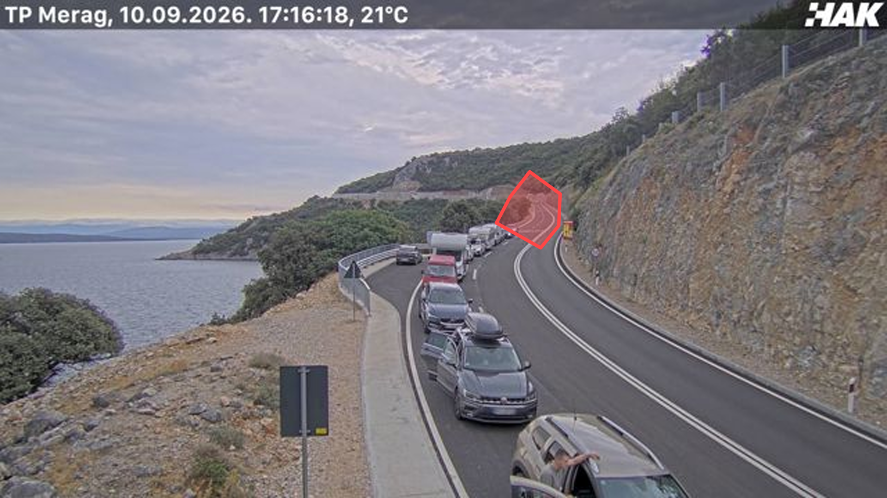
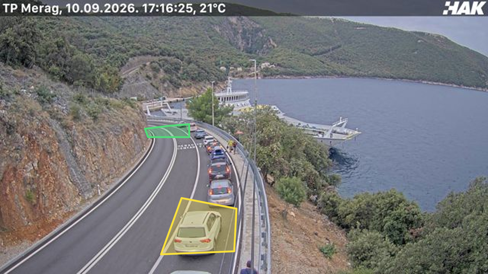

Green and yellow, camera 487
GREEN
The queue has reached the approach road.
Median 18 minutes to full.
YELLOW
The queue is halfway up the road.
Median 14 minutes to full.
RED
A vehicle standing at the far bend.
The port is full.
THE BEST MARITIME PORTAL IN CROATIA / EPISODE 3
Merag, 10 Sept, 17:16. The light is red.
croatianferries.com